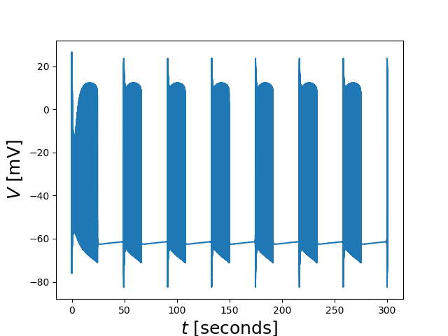
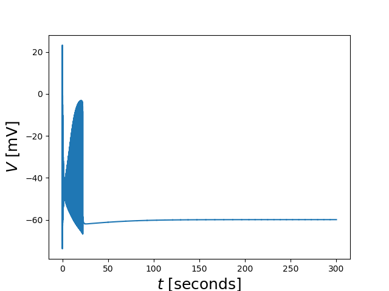
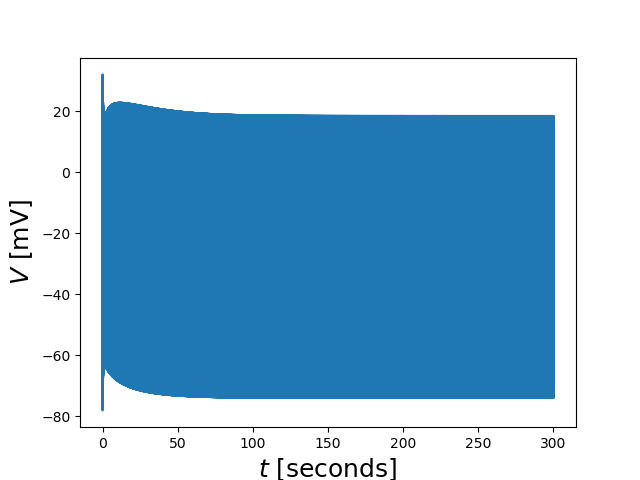

This is the readme for the models associated with the paper:
Barlow BM, Joos B, Trinh AK, Longtin A (2018) Cooling reverses pathological bifurcations to spontaneous firing caused by mild traumatic injury. Chaos 28:106328 http://dx.doi.org/10.1063/1.5040288
This archive was contributed by B Barlow. It requires the NEURON simulator and works under mac, linux, and mswin.
To run the model, extract this archive and then depending on your platform:
mac, linux/unix:
----------------
python3 example_Fig2a.py
mswinUsing the spyder app in the IPython console type
import example_Fig2aThe figures will appear in a Plots pane.



Operating systems versions tested: macOS Mojave 10.14.6 linux Ubuntu 18.04.4 LTS bionic mswin Windows 10 Pro Version 1909 OS build 18363.720 Spyder 4.0.1 NEURON version 7.7.2 on mac and mswin, 7.8.0-99-gda5790d7 on linux